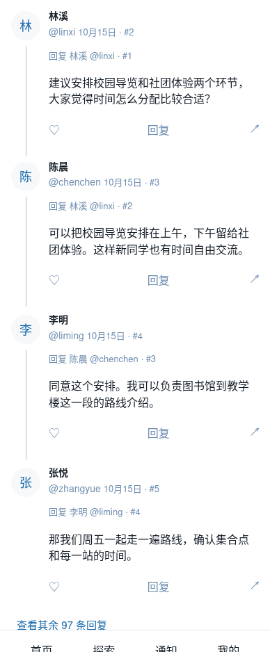
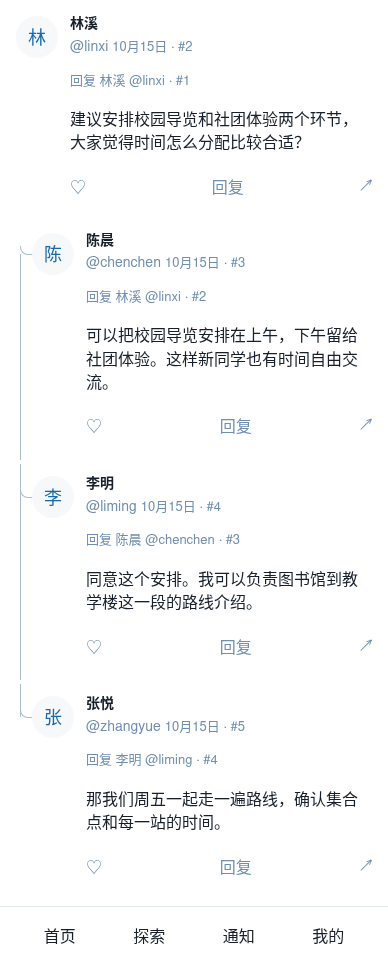

已选定B的直线修订，查看最新交互预览；下方保留最初两版对比。
仅设计预览，使用演示数据，未替换组件、未上线。进度和“收起”文案保持简洁。
头像沿同一轴线对齐，用一条细线连接，最后一条头像处自然结束。正文获得更多宽度。
交互预览 · 深色 · 桌面

保留16px缩进，以细竖线和圆弧短支线接入子回复，最后一条头像处收尾。

复用现有42px头像、颜色、间距及1px边框，未新增全局token。样式仍待选择与视觉验收。